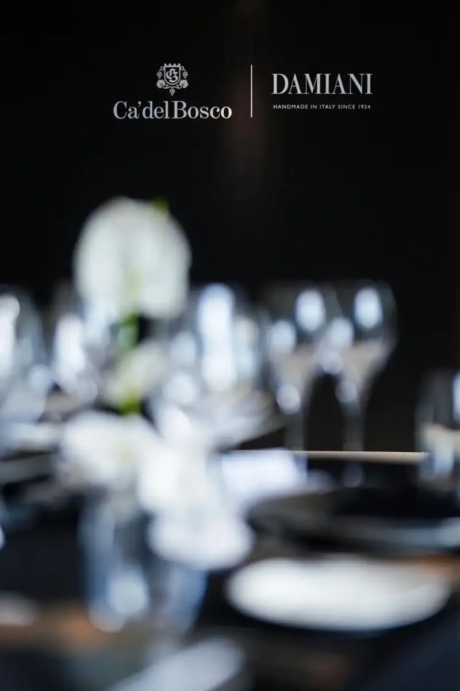
How far can the boundaries of art extend? In this early June, the Interprocom Group, together with the winery Ca' del Bosco and the Italian high jewelry brand Damiani, gave their answer at The Middle House in Shanghai.
“fFrames of Elegance" opened with visuals, was linked by light and shadow, and was accented by taste. It unfolded as an unmatched sensory story. It was not only a lavish private dinner. It was an art evening built from light, culture, and elegance.
The theme of the dinner drew from Ca' del Bosco's influential photo book, 11 Photographers, 1 Bottle of Wine (11 fotografi 1 vino).
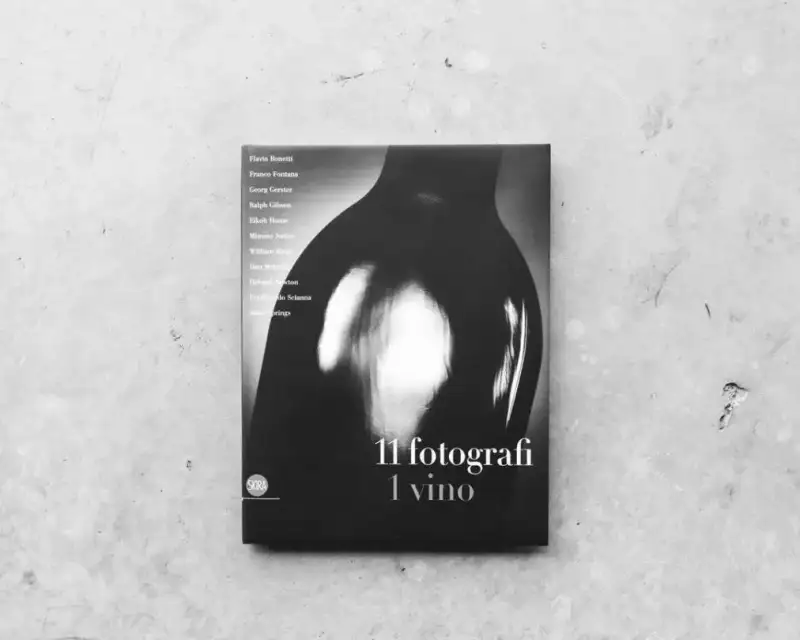
Thirty years ago, Ca' del Bosco set out on a highly original artistic exploration.
It warmly invited eleven of the world's top photographers, including Helmut Newton, William Klein, Don McCullin, and Georg Gerster. It gave them full freedom to create, and to record from every angle the unique charm of the Franciacorta land, the real texture of the winemakers' lives, and the spirit deep within them.
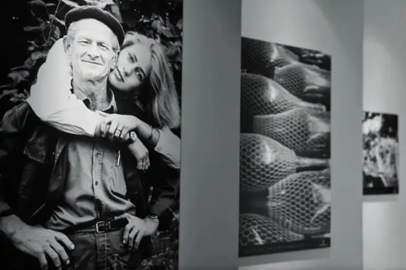
This photo book has no pile of commercial elements. It focuses entirely on light, shadow, and terroir. The photographers skipped the usual shot of the wine label and used a forward-looking artistic eye to explore the secrets of nature and humanity.
From the weathered texture of the soil, to the precise, strong gesture of the winemaker pruning, from a vineyard that looks like a fairyland in the morning mist, to the mysterious fermentation tanks under the night. These images are a visual feast. They go beyond language and use the most direct pictures to convey the depth of time and the warmth of human hands.
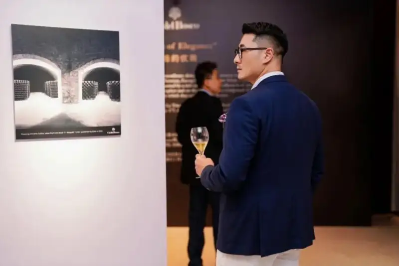
Ca' del Bosco has always held this firm belief. A great wine is not only a feast for the tongue. It is also a visual work for the eyes, and a soulful resonance that touches the heart.
Wine is like a silent but moving symphony. It is a full sensory experience that leads people to appreciate its unique charm from many angles.
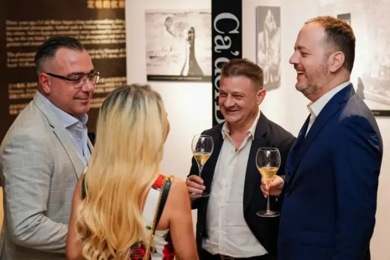
At the dinner, Maurizio Zanella, owner and founder of Ca' del Bosco, shared his thoughts. In today's fast-changing age of photography, these photos may look ordinary at first. But looking back to that time, each image took great effort, and some shots took as long as six hours. The photographers worked tirelessly, catching scenes from different angles and carefully shaping the light, only to present the most satisfying result.
So each image is not only a note on the photographer's artistic idea. It is also a vivid reflection of the winery's precious memory, and it shows the brand's unique charm and history.
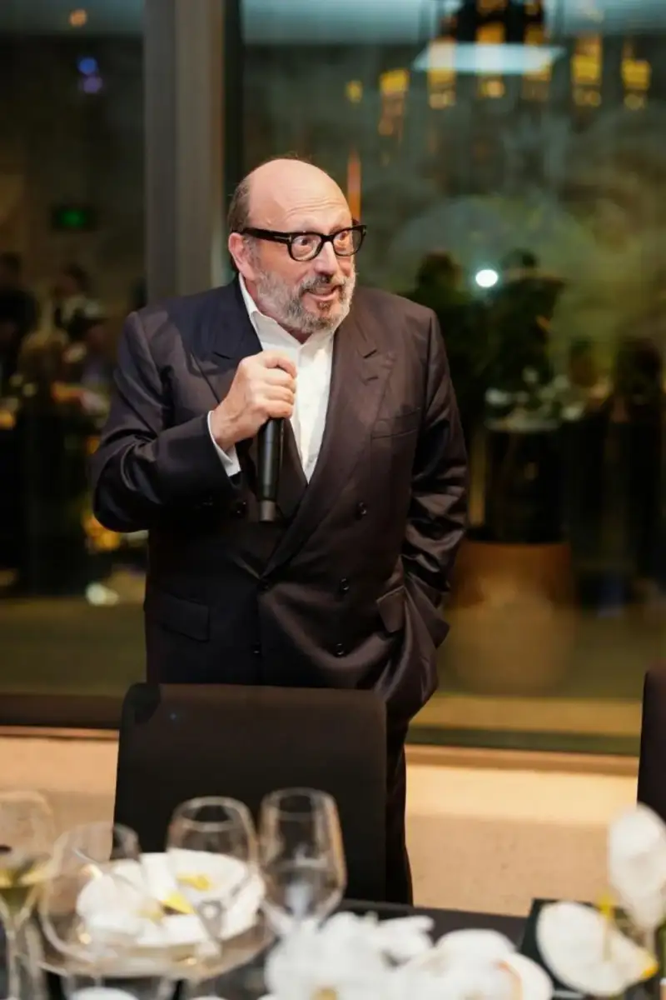
Mr. Maurizio Zanella speaking at the dinner
That night, to honor Ca' del Bosco's photographic art, the Interprocom Group created a surprise segment. Through a clever blend of light and lens, the guests were invited to step into the artistic scene and become striking portrait works themselves.
Elegance took on new life in that moment. The audience was no longer the one who is watched from outside. They became the lead, taking part in the scene and being remembered by time. This captured elegance comes from our shared search for beauty, not from standing by and watching.
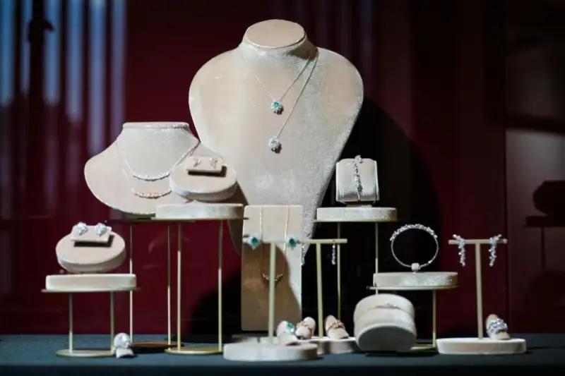
In addition, the stunning display of Damiani jewelry brought lively energy to the whole space. It rejected a forced pile of glamour. In a natural way, it let light and luxury blend quietly in the air and reflect each other, adding layered artistic tension to the dinner.
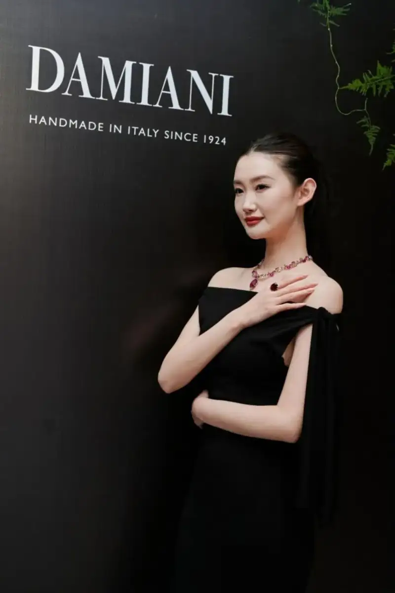
When the lively bubbles of Franciacorta danced in the glass and wove a dreamlike picture with the reflected light, and when the calm of the vineyard shone against the brilliant fire of the gemstones, it was clearly a splendid night made for Ca' del Bosco. It was also a deep dialogue between the senses, across time and space.
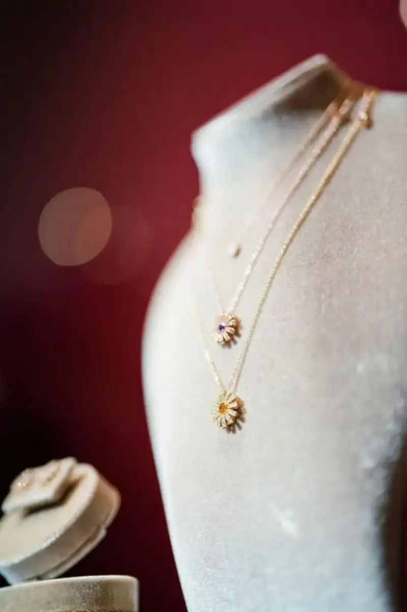
Elegance is not a one-dimensional thing. It shines under the lens of photography, it shows its charm in the pairing of food and wine, and it hides cleverly in the luxury world of jewelry.
With its unique design language, Damiani jewelry captures elegance as timeless. Every detail shows an unmatched sense of style and high taste.
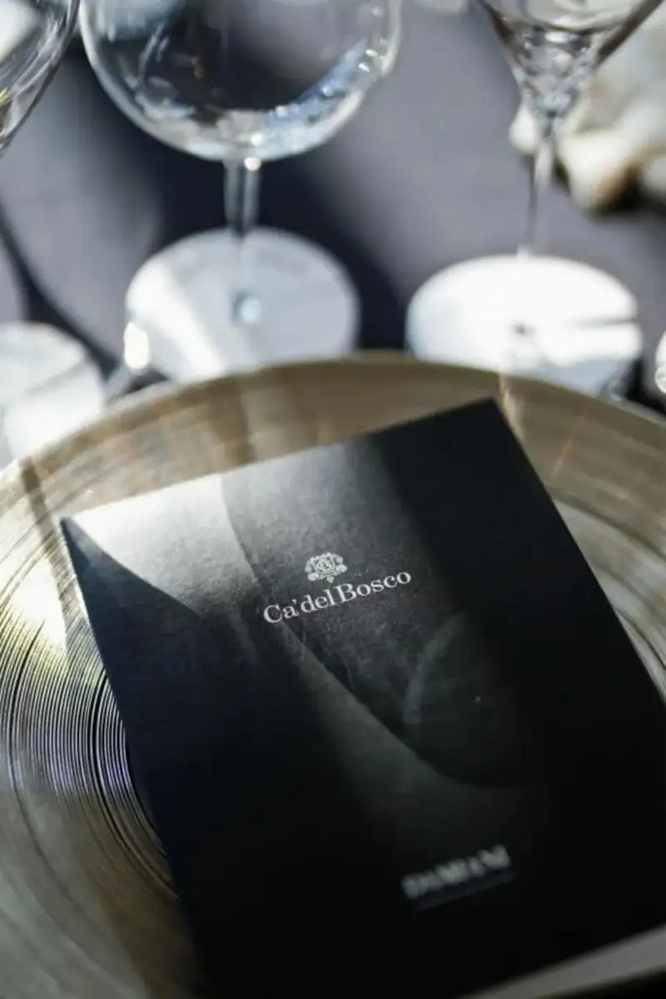
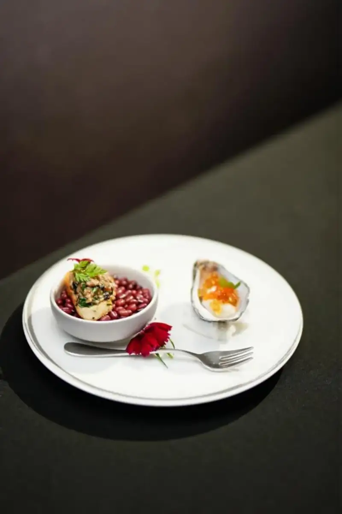
Every work in the photo book shows a remarkable artistic tone. The images catch the moment, and the stories express feeling. The two support each other and add a strong mood of art and culture to this feast of food and wine. Every carefully cooked dish and every chosen pairing at the dinner had its own matching image and story as a note.
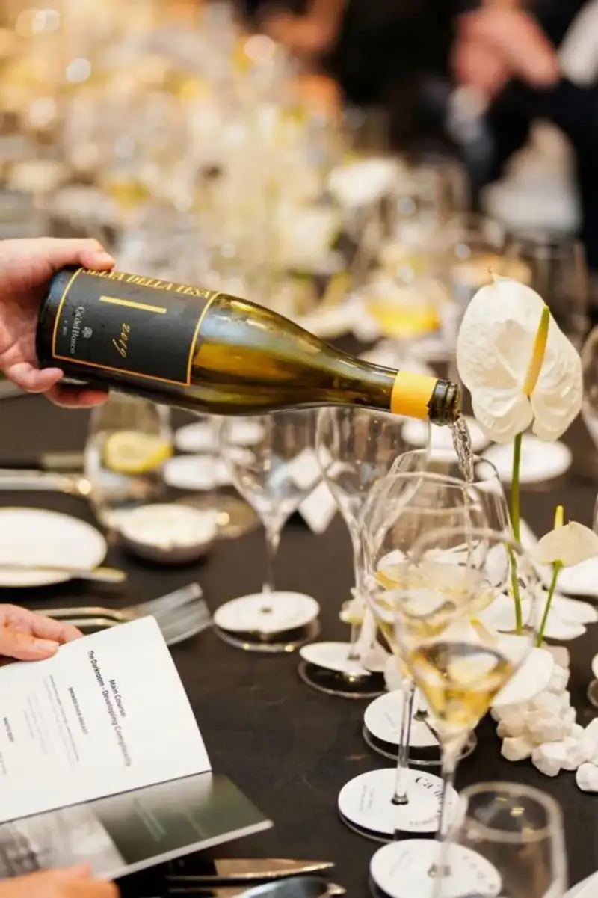
The meaning of this dinner went far beyond the visual surface of beauty. It was more like a mysterious invitation that leads us on a journey of rediscovery.
On this journey, we re-explored the subtle and deep emotional tension between wine and image, as if we could touch the traces of time flowing between them. We came to see again that elegance is not just a surface label of style. It is a philosophy of life that touches the soul and resonates with people. It is the poetry and calm that run through daily life, and the mark of an unremitting pursuit of quality and style.
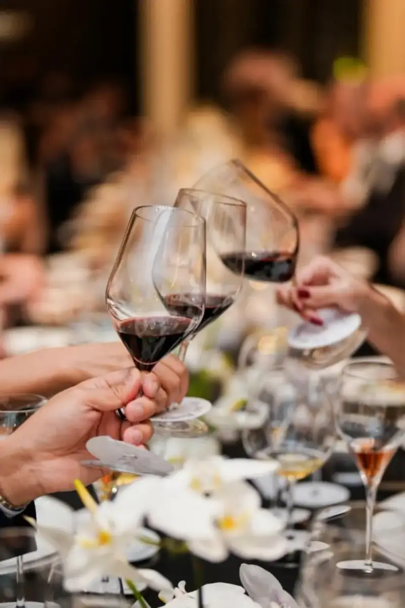